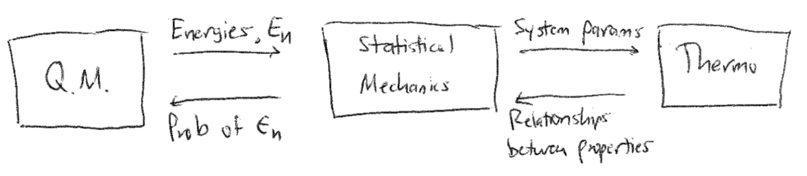

Overview and review of thermodynamics#
Additional Readings for the Enthusiast#
Chandler [1], Chapter 1
Goals and questions for today’s lecture#
Recap fundamental topics that inform our study of statistical mechanics and thermodynamics
What are the different approaches for describing matter? How do they differ?
What is up and down?#
A sign convention is a general rule to determine what is positive and negative in contexts where, putatively, up and down are community-defined. In thermodynamics, we assume that when energy enters a system, its sign is positive (and conversely, when energy leaves a system, its sign is negative). When work is done on the system, its sign is positive, whereas when work is done by the system, its sign is negative.
Three descriptions of matter#
Broadly, we can describe a system and the matter that comprises it using three different approaches: i) thermodynamics, ii) statistical mechanics, and iii) quantum mechanics. This class will largely focus on the former two subjects, although some principles from quantum mechanics will occasionally be referenced. We will first discuss each complementary description of matter and provide some insight into the goals of this class.
Thermodynamics#
Thermodynamics studies the macroscopic properties of systems at equilibrium. Classical thermodynamics does not require knowledge of the microscopic details of a system; for example, we might know that a box contains some amount of gas, but thermodynamic properties do not depend on knowledge of the precise positions of gas molecules. Thermodynamics provides a framework that relates macroscopic properties, and their changes, to one another. However, thermodynamic relations alone cannot predict the magnitude of these changes, which require knowledge on material parameters that must be empirically determined. Finally, thermodynamics is based on a set of postulates which are empirically known to hold but cannot be rigorously proven. Here is an example of a thermodynamic relation:
Equation (1) relates the difference in the heat capacity at constant pressure (\(C_P\)) and the heat capacity at constant volume (\(C_V\)) to the pressure (\(P\)), partial derivative of the internal energy \(E\) with respect to volume at constant temperature, and partial derivative of the volume with respect to temperature (\(T\)) at constant pressure. No microscopic information is provided and all quantities are expressed in terms of differential changes in system properties; the actual values of these partial derivatives and materials parameters must be measured experimentally (or predicted from knowledge of the molecular properties of a system).
Statistical mechanics#
The weakness - and arguably, power - of thermodynamics is that it provides no molecular, microscopic description of the system of consideration, but rather provides universal equations relating measurable macroscopic properties. Statistical mechanics takes the opposite approach by beginning with a microscopic description of a system then deriving macroscopic properties. Using statistical mechanics, we seek to derive the macroscopic properties of systems at or near equilibrium from a statistical description of the enormous (\(\approx 10^{20}\)) number of particles in a typical macroscopic system. Thermodynamics and statistical mechanics thus treat the same systems, but the exact, macroscopic relations provided by thermodynamics can now be complemented by system-specific quantities calculated from molecular details. In effect, statistical mechanics answers the question of why specific systems behave in the way that they do - that is, what accounts for the specific values of macroscopic quantities. This connection between thermodynamics and statistical mechanics will be highlighted throughout the course. Here are examples of equations that we will see frequently throughout this course:
Equation (2) is the canonical partition function, one of the key equations that we will discuss. In this equation, \(E_i\) is the energy of a particular microstate - or set of spatial positions of all particles - of the system and the summation accounts for all possible microstates of the system. The number of microstates can be enormously large. The partition function illustrates that statistical mechanics deals with particle-specific quantities (i.e., energies), but takes into account the incredibly large number of particles and possible particle positions that contribute to the macroscopic behavior of a system. Equation (3) illustrates the connection between thermodynamics and statistical mechanics by writing the Helmholtz free energy - a macroscopic system parameter - as a function of the canonical partition function - a microscopic system parameter. This connection between thermodynamics and statistical quantities will be a major feature of our studies.
Quantum mechanics#
While statistical mechanics provides a microscopic framework that thermodynamics does not, this framework still depends on molecular parameters, such as particle-specific energy levels (\(E_i\) in the partition function above). In principle, this information can be obtained from quantum mechanics. Quantum mechanics defines the set of possible states, and relative energy levels of these states, for a single particle; however, it provides no information on the likelihood that a particle is found in any such state. For example, consider an ideal particle confined within a one-dimensional box with length \(L\) by two walls. The potential energy of the particle is zero for any position within the box and infinite elsewhere.
 {width=”60%”}
{width=”60%”}
Quantum mechanics provides the following description of the energy levels accessible to a single particle associated with its single translational degree of freedom within this box:
Here, \(n\) is a subscript denoting each individual microstate accessible to the single particle system, \(\epsilon\) is the corresponding energy, \(h\) is Planck’s constant, \(m\) is the mass of the particle, and \(L\) is the size of the box. We can plot these discrete energy levels (which depend quadratically on \(n\)) as follows:
 {width=”100%”}
{width=”100%”}
The key point to illustrate is that quantum mechanics provides this set of states and energies which can be used to describe the molecular properties of a single molecule, and then can be used in conjunction with tools from statistical mechanics to calculate macroscopic properties. In this course, we will not use quantum mechanics to define the set of possible \(E_i\), but the connection is something to keep in mind.
{width=”100%”}
To summarize, thermodynamics provides macroscopic relationships between the properties of a system but requires specific materials parameters as input. Statistical mechanics can link macroscopic thermodynamic observables to the microscopic properties of a material but requires a description of system energies. Quantum mechanics can provide the set of energies accessible to a system but cannot tell us the likelihood with which such energies are obtained. In this course we will focus on the former two topics, but it is all three in conjunction that enable the analysis of real systems.
Review of thermodynamics#
We will begin this course by focusing largely on statistical mechanics. It is assumed that most students have taken thermodynamics at the undergraduate level, and thus will be familiar with some basic concepts that will be re-visited later in the course. We will first briefly review thermodynamic concepts that will prove necessary for studying statistical mechanics.
Description of the system#
We define the system as the part of the universe that we seek to study. A system is defined by its contents (i.e., the system could contain 10 mol of a gas) and its boundaries/walls. The properties of the system boundaries define the possible interactions with the surrounding world. The part of the universe in contact with the system is called the surroundings or the environment. Systems and their boundaries are described by the following terms
Closed - mass does not flow into or out of a closed system (the boundaries are impermeable).
Open - mass can flow into or out of an open system (the boundaries are permeable).
Rigid - the volume of the system is constant.
Movable - the volume of the system can change.
Adiabatic/Insulated - adiabatic/insulated boundaries prevent the transfer of heat/energy.
Diathermal - diathermal boundaries allow the transfer of heat/energy.
Isolated - an isolated system is closed, rigid, and adiabatic.
 {width=”100%”}
{width=”100%”}
Thermodynamic variables#
We will define two different types of thermodynamic variables. Extensive variables depend on the size or amount of material in the system. If a system is formed from two subsystems, the extensive properties of the combined system are equal to the sum of the extensive properties of the subsystems. For example, the volume and internal energy are extensive variables. Intensive variables do not increase as the size or amount of the system increases. For example, the temperature and pressure are always intensive variables. The ratio of extensive variables (typically an extensive variable divided by the amount of material) also defines an intensive variable - for example, the molar volume is an intensive variable. Variables defined by dividing an extensive variable by the number of particles are sometimes called specific properties, although we will not frequently use that nomenclature. Conversely, multiplying always intensive variables (temperature and pressure) by the amount of material does not yield a meaningful extensive parameter. We will further discuss the definition of always intensive variables in the material below.
Combining the above, we can consider a gas with \(N\) particles in a volume \(V\), temperature \(T\), and pressure \(P\). If this system were duplicated and combined, the result would be a gas with \(2N\) particles in a volume \(2V\) still at a temperature \(T\) and pressure \(P\) - the extensive variables have doubled, but the intensive variables are unchanged. If we define the density as a specific property \(\rho=N/V\), it is also unchanged upon doubling the system size.
Work and heat#
The mechanical work, \(W\), is the product of an intensive generalized force, \(f\), and an extensive generalized displacement, \(\Delta x\):
We will define the work as positive if the work is done on the system by the environment. In differential form, this can be written:
Here, \(A\) and \(B\) indicate the initial and final thermodynamic states connected by some process. Thermodynamic states are defined by the values of thermodynamic variables - each state would have a corresponding volume, temperature, pressure, number of particles, etc. The process is defined by a specific path through intermediate states (or non-equilibrium states) as we will discuss again shortly. The most common example of work we will see is pressure-volume work, or the work done due to an expansion or compression of a system. For expansion-contraction work, the generalized force, \(f\) is equal to the negative pressure, \(-P\) (by convention) and the generalized displacement is equal to the change in the volume, \(V\):
An increase in the system’s volume is associated with work being done in the surroundings. Other examples of work include chemical work, where a chemical potential \(\mu\) is multiplied by a change in the number of molecules in a system \(dN\); surface deformation work, where a stress \(\sigma\) is multiplied by a change in area \(dA\); elongational work, where a tension \(\tau\) is multiplied by a change in length \(dL\); or magnetic work, where a magnetic field \(H\) is multiplied by a change in magnetization \(dM\), as summarized below. The differential parameter here is always extensive, while the prefactor is always intensive. These pairs of intensive-extensive variables are referred to as conjugate variables. Some of you may not have extensively discussed the chemical potential. Still, it is a quantity conceptually identical to the fugacity (and used in its definition) as we will discuss much later in the course.
Type of Work Equation Intensive Property Extensive Property
Chemical \(\mu dN\) chemical potential \(\mu\) number of molecules in a system \(N\) Surface Deformation \(\sigma dA\) stress \(\sigma\) area \(A\) Elongation \(\tau dL\) tension \(\tau\) length \(L\) Magnetic \(H dM\) magnetic field \(H\) magnetization \(M\)
The heat absorbed by (added to) the system from its surroundings during a change from state \(A\) to state \(B\) is
Both work and heat (equations (5) and (7)) rely on integrals that depend on the exact path taken between state \(A\) and state \(B\). However, the difference in the internal energy, \(E\), between state \(A\) and \(B\) does not depend on the path. \(E\) is thus called a state function because it is a property of each state and not the path between them. We can write the change in \(E\) between states \(A\) and \(B\), \(\Delta E\), for a system undergoing a change in volume as:
This equation is the first law of thermodynamics and defines the conservation of energy. Note that since each path passes through intermediate states which may vary in pressure, \(P\) is within the integral above as its value will depend on the specific path taken. The same change in energy will be obtained for any arbitrary path, though, so we are free to calculate the change in energy along the path that is most convenient for a given calculation (e.g., along a path for which the pressure is constant).
 {width=”100%”}
{width=”100%”}
Entropy#
The second law of thermodynamics defines another state function called the entropy, \(S\). Entropy is conceptually equivalent to the amount of uncertainty pertaining to any given macrostates (more on this later). The combined entropy of a system and its surroundings (i.e., the universe) always increases in an irreversible process and remains constant in a reversible process; it never decreases. The entropy of the system can decrease as long as there is a corresponding increase in the entropy of the surroundings such that the total entropy of the universe is constant or increases. The change in entropy between states \(A\) and \(B\) is \(\Delta S = \int_A^B dS = \int_A^B \frac{dQ_{\mathrm{rev}}}{T}\), therefore:
The subscript on \(dQ\) indicates that the change in entropy is defined along a reversible path from \(A\) to \(B\). For irreversible processes, the second law of thermodynamics states
Note that by this definition the entropy change of an isolated system (for which \(dQ = 0\) for all processes since no heat can exchange with the universe) is always greater than or equal to zero.
The fundamental relation of thermodynamics#
For a system undergoing a reversible process, we can write a combined first and second law of thermodynamics (assuming a one-component system) by combining equations (6) and (8):
This expression is also called the fundamental relation of thermodynamics in the energy representation. We can write an equivalent expression in terms of the entropy:
This is called the fundamental relation in the entropy representation. We can also write an exact differential of \(dE\) to obtain expressions for intensive variables:
Comparing this expression with the fundamental relation in the energy representation yields:
and
The subscripts indicate that the partial derivative is taken with the subscripted variable held constant; in other words, Equation (10) states that the temperature is defined as the partial derivative of the internal energy with respect to entropy at constant volume. Using these relations, we find that for each pair of conjugate variables that appears in the fundamental relation, the variable that is always intensive can be expressed as a partial derivative of either the energy or the entropy with respect to its conjugate extensive variable and with all other extensive variables held constant.
- 1
David Chandler. Introduction to Modern Statistical Mechanics. Oxford University Press, New York, 1st edition edition, September 1987. ISBN 978-0-19-504277-1. URL: http://pcossgroup.xmu.edu.cn/old/users/xlu/group/courses/apc/imsm_chandler.pdf.
- 2
Donald A. McQuarrie. Statistical mechanics. University Science Books, Sausalito, Calif, 2000. ISBN 978-1-891389-15-3. URL: https://vuquangnguyen2016.files.wordpress.com/2017/12/339279795-donald-a-mcquarrie-statistical-mechanics-bookzz-org.pdf.